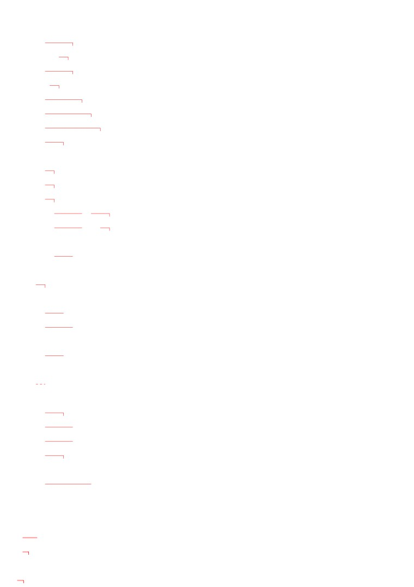

第１９
課
課:19 (頁:1/9)
ことば
1.
のぼります
Ⅰ
登ります
登，爬 山
［やまに～］
［山に～］
2.
とまります
Ⅰ
泊まります
住〔飯店〕
［ホテルに～］
3. そうじします Ⅲ
掃除します
打掃
4. せんたくします Ⅲ
洗濯します
洗衣服
5. れんしゅうします Ⅲ 練習します
練習
6. なります Ⅰ
成為
7. ねむい
眠い
想睡，睏
8. つよい
強い
強
9. よわい
弱い
弱
10. ちょうしが いい
調子が いい
情況好
11. ちょうしが わるい
調子が 悪い
情況差
12. ちょうし
調子
情況，狀態
13. ゴルフ
高爾夫球（～を します：打高爾
夫球）
14. すもう
相撲
相撲
15. パチンコ
小鋼珠（～を します：打小鋼珠）
16. おちゃ
お茶
茶道
17. ひ
日
日，日子
18. いちど
一度
一次
19. いちども
一度も
連一次也（表否定）
20. だんだん
逐漸
21. もうすぐ
馬上
22. おかげさまで
託您的福（略帶感謝意思的客氣說
法）
かい わ
■会話
かん ぱい
乾杯
乾杯
じつ
実は
老實說，說真的
課:19 (頁:2/9)
ダイエット
なん かい
何回も
多次
しかし
但是，可是
む り
無理［な］
不可能〔的〕，難做到〔的〕
からだ
体に いい
對身體好
ケーキ
蛋糕
---以下單字請自行練習發音---
かつ しか ほく さい
葛飾北斎
江戶時代有名的畫家（1760～1849）
ぶん けい
文型
す も う
み
1.
相撲を 見た ことが あります。
やす
ひ
さん ぽ
い
2.
休みの 日は テニスを したり、散歩に 行ったり します。
あつ
3.
これから だんだん 暑く なります。
れい ぶん
例文
ほっ かい どう
い
1.
北海道へ 行った ことが ありますか。
いち ど
ねん
とも だち
い
…はい、一度 あります。 2年まえに 友達と 行きました。
うま
の
2.
馬に 乗った ことが ありますか。
いち ど
の
…いいえ、一度も ありません。 ぜひ 乗りたいです。
ふゆ やす
なに
3.
冬休みは 何を しましたか。
きょう と
てら
じん じゃ
み
とも だち
…京都の お寺や 神社を 見たり、友達と パーティーを
したり しました。
に ほん
なに
4.
日本で 何を したいですか。
りょ こう
ちゃ
なら
…旅行を したり、お茶を 習ったり したいです。
からだ
ちょう し
5.
体の
調子は どうですか。
…おかげさまで よく なりました。
に ほん ご
じょう ず
6.
日本語が 上手に なりましたね。
…ありがとう ございます。 でも、まだまだです。
なん
7.
テレサちゃんは 何に なりたいですか。
い しゃ
…医者に なりたいです。
かい わ
会話
ダイエットは あしたから します
みな
かん ぱい
皆
：
乾杯。
課:19 (頁:3/9)
------------------------------
まつ もと よし こ
た
松本良子：
マリアさん、あまり 食べませんね。
じつ
マリア ： ええ。 実は きのうから ダイエットを して います。
まつ もと よし こ
なん かい
松本良子：
そうですか。 わたしも 何回も ダイエットを した
ことが あります。
マリア ： どんな ダイエットですか。
まつ もと よし こ
まい にち
た
みず
の
松本良子：
毎日 りんごだけ 食べたり、水を たくさん 飲んだり
しました。
まつ もと ぶ ちょう
む り
からだ
松本部長：
しかし、無理な ダイエットは 体に よくないですよ。
マリア ： そうですね。
まつ もと よし こ
松本良子：
マリアさん、この ケーキ、おいしいですよ。
マリア ： そうですか。
……。ダイエットは また あしたから します。
れん しゅう
練習 Ａ
けい
けい
けい
けい
1.
ます形
た 形
ます形
た 形
Ⅰ
か
き
ます
か
い
た
Ⅱ
たべ
ます
たべ
た
い
き
ます
＊い
っ
た
でかけ
ます
でかけ
た
いそ
ぎ
ます
いそ
い
だ
おき
ます
おき
た
の
み
ます
の
ん
だ
あび
ます
あび
た
よ
び
ます
よ
ん
だ
でき
ます
でき
た
とま
り
ます
とま
っ
た
み
ます
み
た
か
い
ます
か
っ
た
けい
けい
ま
ち
ます
ま
っ
た
ます形
た 形
はな
し
ます
はな
し
た
Ⅲ
き
ます
き
た
し
ます
し
た
せんたくし
ます
せんたくし
た
おき なわ
2.
わたしは
沖縄へ
いった
ことが あります。
ふ じ さん
富士山に
のぼった
すしを
たべた
まい ばん
ほん
3.
毎晩
テレビを
みた
り、
本を
よんだ
り します。
て かみ
おん がく
手紙を
かいた
音楽を
きいた
に ほん ご
日本語を
べんきょうした
パソコンで
あそんだ
課:19 (頁:4/9)
4.
テレサちゃんは
せが たか
く
なりました。
きれい
に
10さい
に
れん しゅう
練習 Ｂ
れい
ひろ しま
い
1. 例：
→ 広島へ 行った ことが あります。
1)
→
2)
→
3)
→
4)
→
れい
い
2. 例： カラオケに 行きます（ いいえ ）
い
→ カラオケに 行った ことが ありますか。
……いいえ、ありません。
ちゃ
なら
1)
お茶を 習います（ はい ） →
うま
の
2)
馬に 乗ります（ いいえ ） →
に ほん じん
と
3)
日本人の うちに 泊まります（ はい ） →
りょう り
た
いち ど
4)
インドネシア料理を 食べます（ いいえ、一度も ） →
れい
にち よう び
にち よう び
そう じ
せん たく
3.
例： 日曜日 →
日曜日は 掃除したり、洗濯したり します。
よる
やす
ひ
1)
夜 →
2)
休みの 日 →
3)
きのう →
4)
おととい →
れい
ど よう び
なに
さん ぽ
み
4. 例： 土曜日は 何を しますか。（ 散歩します・ビデオを 見ます ）
さん ぽ
み
→ 散歩したり、ビデオを 見たり します。
やす
ひ
なに
1)
休みの 日は 何を しますか。
れん しゅう
ほん
よ
（ ゴルフの 練習を します・うちで 本を 読みます ） →
なに
2)
パーティーで 何を しますか。
うた
うた
（ ダンスを します・歌を 歌います ） →
ふゆ やす
なに
3)
冬休みは 何を したいですか。
い
とも だち
（ スキーに 行きます・友達と パーディーを します ） →
しゅっちょう
なに
4)
出張の まえに、何を しなければ なりませんか。
し りょう
つく
おく
（ 資料を 作ります・レポートを 送ります ） →
れい
さむ
課:19 (頁:5/9)
5.
例1： → 寒く なりました。
れい
びょう き
例2： → 病気に なりました。
1)
→
2)
→
3)
→
4)
→
5)
→
6)
→
れい
まい にち
れん しゅう
に ほん ご
じょう ず
6. 例： 毎日 練習しました・日本語が 上手です
まい にち
れん しゅう
に ほん ご
じょう ず
→ 毎日 練習しましたから、日本語が 上手に なりました。
あま
もの
た
は
わる
1)
甘い 物を たくさん 食べました・歯が 悪いです →
からだ
よわ
2)
スポーツを しませんでした・体が 弱いです →
かい しゃ
ひま
3)
会社を やめました・暇です →
やす
げん き
4)
うちで ゆっくり 休みました・元気です →
れん しゅう
練習 Ｃ
しん かん せん
の
1. Ａ: 新幹線に 乗った ことが ありますか。
Ｂ: ええ、あります。
Ａ: どうでしたか。
はや
Ｂ: とても 速かったです。
い
ばな
1) 生け花を します
たの
楽しいです
ぎゅう
た
2)
牛どんを 食べます
おいしいです
3) パチンコを します
おもしろいです
なつ やす
2. Ａ: もうすぐ 夏休みですね。
Ｂ: ええ。
なつ やす
なに
Ａ: 夏休みは 何を したいですか。
うま
の
つ
Ｂ: そうですね。 馬に 乗ったり、釣りを したり したいです。
Ａ: いいですね。
やま
のぼ
1) 山に 登ります
うみ
およ
海で 泳ぎます
ほん
よ
課:19 (頁:6/9)
2)
本を 読みます
スポーツを します
え
3)
絵を かきます
おん がく
き
音楽を 聞きます
あつ
3. Ａ: 暑く なりましたね。
なつ
Ｂ: そうですね。 もう 夏ですね。
およ
い
Ａ: ことしは ぜひ 泳ぎに 行きたいですね。
Ｂ: ええ。
すず
あき
1) 涼しい
秋
もみじ
み
い
紅葉を 見に 行きます
さむ
ふゆ
2)
寒い
冬
い
スキーに 行きます
あたた
はる
3)
暖かい
春
はな み
い
花見に 行きます
もん だい
問題
れい
1.
1)
…例： はい、あります。
れい
み
き
2)
…例： ビデオを 見たり、ＣＤを 聞いたり します。
れい
い
ばな
なら
りょ こう
3)
…例： 生け花を 習ったり、旅行したり したいです。
れい
さい
4)
…例： 22歳に なります。
2.
1)
( ○ )
2)
( × )
3)
( ○ )
4)
( ○ )
5)
( ○ )
れい
か
か
の
の
3.
例： 書きます
書いた
8)
乗ります
乗った
い
い
け
け
1)
行きます
行った
9)
消します
消した
はたら
はたら
た
た
2)
働きます
働いた
10)
食べます
食べた
およ
およ
ね
ね
3)
泳ぎます
泳いだ
11)
寝ます
寝た
の
の
み
み
4)
飲みます
飲んだ
12)
見ます
見た
あそ
あそ
お
お
5)
遊びます
遊んだ
13)
降ります
降りた
も
も
さん ぽ
さん ぽ
6)
持ちます
持った
14) 散歩します
散歩した
か
か
き
き
7)
買います
買った
15)
来ます
来た
れい
に ほん ご
じょう ず
4. 例： ミラーさんは 日本語（ が ） 上手に なりました。
おき なわ
い
1)
沖縄へ 行った こと（ が ） ありますか。
さい
2)
ことし 18歳（ に ） なります。
たか
とも だち
と
3)
ホテルは 高いですから、友達の うち（ に ） 泊まります。
からだ
4)
たばこは 体（ に ） よくないです。
れい
に ほん
はじ
5.
例： 日本は 初めてですか。
ねん
いち ど
き
課:19 (頁:7/9)
……いいえ、3年まえに、一度 （ 来た ） ことが あります。
そう じ
き
き
か
もの
い
掃除します
来ます
聞きます
買い物に 行きます
み
い
かきます
見ます
行きます
い
かた
1)
ミラーさん、行き方が わかりますか。
いち ど
い
だい じょう ぶ
……ええ、一度 （ 行った ） ことが ありますから、大丈夫です。
た ろう くん
し ごと
てつだ
2)
太郎君は うちの 仕事を 手伝いますか。
そう じ
か
もの
い
……ええ、（ 掃除した ）り、（ 買い物に 行った ）り しますよ。
しゅ み
なん
3)
趣味は 何ですか。
え
おん がく
き
……絵を （ かいた ）り、音楽を （ 聞いた ）り する
ことです。
か ぶ き
4)
歌舞伎は おもしろいですか。
か ぶ き
み
……わたしは 歌舞伎を （ 見た ） ことがありませんから…。
れい
さむ
6. 例：
（ 寒く ） なりましたね。 エアコンを つけましょうか。
くら
さむ
あめ
ねむ
きれい
暗い
寒い
雨
眠い
そう じ
へ や
1)
掃除しましたから、部屋が （ きれいに ） なりました。
に ほん
ふゆ
じ
くら
2)
日本は 冬 5時ごろ （ 暗く ） なります。
ねむ
3)
おなかが いっぱいです。 （ 眠く ） なりました。
あさ
てん き
ご ご
あめ
4)
朝は いい 天気でしたが、午後から （ 雨に ） なりました。
ふ じ さん
7.
富士山
ふ じ さん
み
ふ じ さん
富士山を 見た ことが ありますか。 富士山は 3,776メートルで、
に ほん
たか
やま
しず おか けん
やま なし けん
あいだ
日本で いちばん 高い 山です。 静岡県と 山梨県の 間に
ふゆ
ゆき
ふ
しろ
なつ
やま
うえ
あります。冬は 雪が 降って、白く なります。 夏も 山の 上に
ゆき
がつ
がつ
ふ じ さん
のぼ
雪が あります。7月と 8月だけ 富士山に 登る ことが できます。
やま
うえ
ゆう びん きょく
て がみ
だ
でん わ
山の 上に 郵便局が あって、手紙を 出したり、電話を かけたり
する ことが できます。
なつ
あき
てん き
あさ
ふ じ さん
あか
夏と 秋、いい 天気の 朝 富士山は 赤く なります。 とても
に ほん じん
しゃ しん
と
え
きれいですから、日本人は 写真を 撮ったり、絵を かいたり します。
かつ しか ほく さい
あか
ふ じ さん
え
ゆう めい
葛飾北斎の 赤い 富士山の 絵は 有名です。
ふ じ さん
せ かい
たか
やま
1)
（ × ）富士山は 世界で いちばん 高い 山です。
なつ
ふ じ さん
ゆき
み
2)
（ × ）夏は 富士山で 雪を 見る ことが できません。
ふ じ さん
でん わ
ゆう びんきょく
3)
（ ○ ）富士山に 電話も 郵便局も あります。
文法
１
動詞 た形
課:19 (頁:8/9)
本課學習た形。動詞た形的變化如下。
（參考初級Ⅱ本冊70頁第19課練習A1）
た形是將て形的「て﹑で」分別改成「た﹑だ」就行了。
て形
→ た形
Ⅰ類
かいて
→ かいた
のんで
→ のんだ
Ⅱ類
たべて
→ たべた
Ⅲ類
きて
→ きた
して
→ した
２.
動詞 た形 ことが あります
曾經～過
在敘述過去體驗過的事情時，用這個句型來表達。這個句型和第9
課學過「わた
しは 名詞が あります」的句子基本上相同。經驗的內容用「動詞 形こと
」。
這個名詞子句來表示。
うま
の
① 馬に 乗った ことが あります。
我騎過馬。
要注意這個句型和單純表示過去某一時間做了某個動作的句子不同。
きょ ねん
ほっ かい どう
うま
の
② 去年 北海道で 馬に 乗りました。 去年在北海道騎了馬。
３.
動詞 た形 り﹑動詞 た形 り します
又…又…
在第10課學過從很多事物或人之中選取幾個敘述的句型（～や ～［など］）。
而這裡則是從很多動作中選取幾個敘述時的句型。時態在句尾表示。
にち よう び
えい が
み
③ 日曜日は テニスを したり、 映画を 見たり します。
星期天要打網球、看電影。
にち よう び
えい が
み
④ 日曜日は テニスを したり、 映画を 見たり しました。
星期天打了網球、看了電影。
〔註〕 這個句型和16課學過的「動詞て形﹑動詞て形﹑動詞」句型意思不同，
注意不要混淆。
にち よう び
えい が
み
⑤ 日曜日は テニスを して、 映画を 見ました。
星期天打網球後，看了電影。
例句⑤
中打完網球後再看電影的動作很明顯，而例句④
裡則列舉了星期天做的事
情中有打網球、看電影，只是暗示還做了別的事情，二者之間沒有時間上的關聯
。此外，用「～たり ～たり します
」句型表示每天一定會做的事情（如早上起
床、吃飯、晚上睡覺等）並不自然。
４.
い形容詞 （
／
な形容詞 ［／］→に }なります
變成…
名詞 に
「なります」表示狀態的變化。
さむ
さむ
⑥ 寒い
→ 寒く なります 變冷
げん き
げん き
⑦ 元気［な］
→ 元気に なります 變健康
さい
さい
課:19 (頁:9/9)
⑧ ２５歳
→
２５歳に なります 即將25歲
５ . そうですね
「そうですね」表示同意對方說的話或有同感。同樣的句子還有下降調的「そう
ですか」（參考第2課6.）。
「そうですか
」是得到未知的資訊，而接受或感嘆的表達，而「そうですね」
，則是在對方提到自己也作如是想或知道的事情時，表示同意或同感的用法。
さむ
⑨ 寒く なりましたね。
變冷了哦！
…そうですね。
…真是耶！